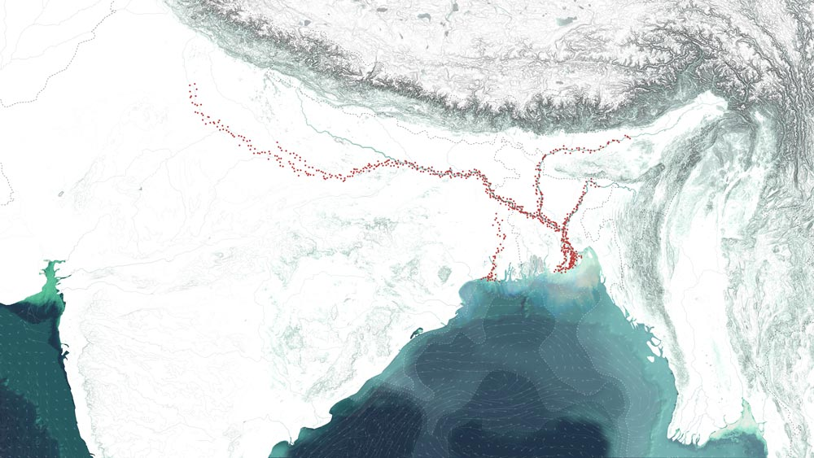
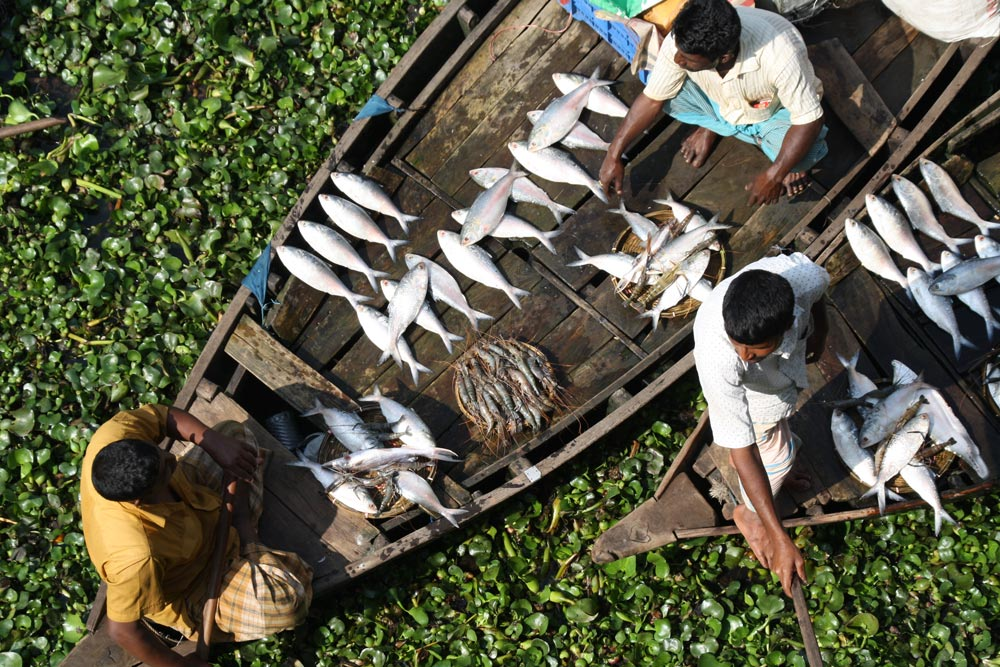
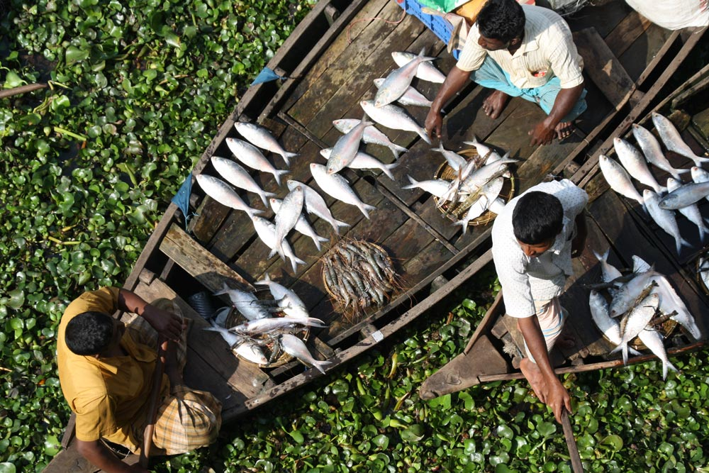

Monsoonal Multiplicities
Never is a plateau separable from the cows that populate it, which are also the clouds in the sky.
------ Deleuze and Guattari, A Thousand Plateaus, p. 23.
Monsoonal Multiplicities is an exhibition project that brings together texts, maps, photographs and videos generated by Monsoon Assemblages researchers during their five-year intra-action with the monsoon in south and south east Asia. It offers visitors a virtual experience of the monsoon as a multiplicity of entangled beings, energies, infrastructures, lifeworlds, matters, technologies and knowledge practices. It is organized in five rooms - framings, infrastructures, interspecies interlocuters, matters and urban assemblages – that serve as agential cuts through monsoonal encounters. The website has been designed to enable visitors to navigate rhyzomically through these rooms - to scroll down, leap across, return, zoom in, pause, or in other ways intra-act with the material without ever having to return to a home page. Navigation becomes a way of constructing constitutive interrelations across difference, providing an embodied virtual experience of the multiplicitous monsoon.
Hilsa, the national fish of Bangladesh, is entangled with processes of urbanization and industrialization. Construction of dams, barrages, roads, bridges, ports, factories and energy infrastructures impact delta waterworlds. Such anthropogenic activities alter water and sediment flows, intensify nutrient and pollution loads, and disrupt underwater environments. Hilsa are responding in unforeseen and unpredictable ways.
Hilsa and the Monsoon
Known as ilish in Bengali, hilsa are a monsoonal species. They inhabit the entire coastline of the Indian Ocean, but they are most abundant in the upper reaches of the Bay of Bengal. At the apex of the Bay immense monsoonal flows merge with ocean currents and tides creating a unique ecosystem. While hilsa spend most of their life in the Bay they migrate to the rivers of the delta to breed. The rains of the south‐west monsoon act as an ecological trigger, initiating their spawning migration. Hilsa used to migrate to the upper reaches of all the major rivers, but in recent times their range has dramatically reduced. The altered mobilities of the hilsa are an indicator of shifting human-nonhuman relations
“The Ilisha frequents the Bay of Bengal and the large salt watef estuaries of the Ganges, and in thf rainy season ascends the largef rivers to spawn. I have seen if as high as Agra and Kanpur, buf … about Calcutta and Dhaka if is in the utmost abundance anf perfection”
------ (Francis BuchananHamilton, 1822: 244).
 


The Fisher
Fishers from the Meghna River ascribe changing hilsa migration patterns to the inhospitable river environment. The Farakka Barrage, commissioned in 1975 by the Indian government, transformed Bangladesh’s rivers. The barrage reduced the velocity of monsoonal flows leading to siltation and sedimentation downstream, restricting hilsa movements. Fishers are also concerned by illegal sand mining, fuelled by Dhaka’s booming construction industry. Flotillas of sand dredgers vacuum gravel and sand from the river, altering its bathymetry and disturbing fish migration routes. In response to changing hilsa movements, fishers are forced deeper into the turbulent Bay of Bengal.


“The river has changed;
the difference is like day and night.
When we were children the flow was much higher than at this time”
------ Hilsa Fisher, Chandpur